One switch adds a deep-dive for the adult in the room.
Artifacts · 7 projects
Artifacts
What I make when nobody's briefing me: a pixel art app, isometric 3D loops, two music shorts, a browser groovebox, a soundtrack made of art tools, a hand-painted Gundam and a camera roll.
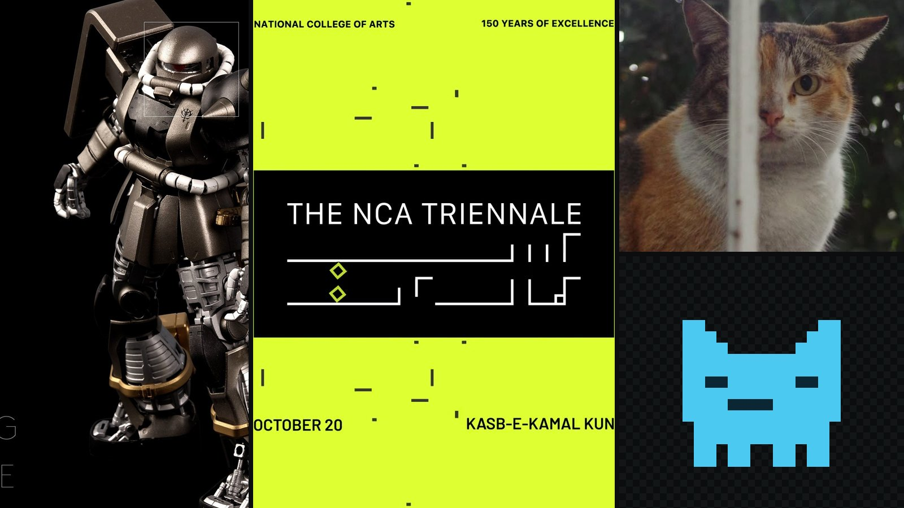
00 Seven artifacts
01 Pixel Pals
A pixel editor for one kid.
A drawing tool with a pixel museum attached: eight rooms of pixel history before the pencil unlocks. Concept, design, code and copy, all mine.
Byte · poke me
The pixel museum · 8 rooms
Time machine
Teach first. Pencil second. Before the editor opens, Byte runs a ten-stop tour of pixel history, from the first digital photo in 1957 to Minecraft. Every stop has something to do.
For kids still learning to read.
A right answer wins a sticker that becomes a stamp in the editor.
The tour
A tutorial that watches. No Next button. Byte asks for one small thing, highlights the panel, then waits for the drawing to change.
| Step | Byte asks | The app watches |
|---|---|---|
| Toolbox | Draw three squares with the pencil. | strokes ≥ 3 |
| Brush | Turn Mirror X on, or pick a bigger brush. | mirror || brush > 1 |
| Colours | Change one colour with the colour box. | palette == custom |
| Grid | Try the 16 button, then move the zoom slider. | zoom touched |
| Timeline | Add a second frame. | frames ≥ 2 |
| Photo | Open a photo. Any picture will do. | reference loaded |
| Export | Press Save to keep it in your gallery. | saved || exported |
Challenges
Exercises that mark their own work. Each one grades the pixels honestly and says what to fix. One Restore puts the drawing back exactly as it was.
Draw a heart
Fill in the faint guide under the grid.
Pass · 70% covered, spill under 30%“Keep going, 41% of the heart is filled.”Make it bounce
Draw a ball, duplicate the frame, move it down, press play.
Pass · 2 frames that differ“The two frames look the same.”Recolour it
Repaint a face until it looks like someone you know.
Pass · 3+ colours, palette edited“Now change a colour itself.”Make an emoji
A 12×12 face in three colours.
Pass · 12×12, 3 colours“Try one more colour.”Four greens
Draw with the Game Boy palette.
Pass · All four shades used“One green is still missing.”The system
Four characters. Eight palettes. All the art is written as rows of text. Each character is a tone, not a colour, so one sprite re-shades itself in any palette.
#Darkest ink
+Mid tone
−Light tone
.Transparent
Built by hand
Smaller than the libraries it replaces. Exports to PNG, round PNG, sprite sheet and GIF, one click each.
Written from scratch: about 60 lines instead of a 40 KB dependency.
A Bayer dither maps any photo onto the palette, ready to trace.
Every stroke paints both sides, so faces come out even.
Eighty steps back per frame, so it feels safe to try things.
Honest copy
Honest, even in a toy. Each kid gets a name and a passcode. Nothing leaves the computer: no account, no upload, no analytics.
Names and drawings are kept on this computer only. The passcode keeps a sibling out of your gallery. It is not real security, so do not use a password from anywhere else.
Welcome screen
02 Isotwist
Small worlds, on a tilt.
Four looping 3D art pieces from 2016. Everyday things, turned thirty degrees and set spinning. Sketched in Photoshop and Illustrator, modelled and animated in Cinema 4D, finished in After Effects.
2016PhotoshopIllustratorCinema 4DAfter Effects
The series
Small worlds, on a tilt. Four everyday things, turned at thirty degrees and set on a loop. Pick one, slow it down, or twist time with the slider.
A wall of CCTV cameras, all turning together.
Process
Sketch, design, model, move. Each piece went through the same four tools, from a rough idea to a square loop.
- 01SketchPhotoshop
Rough ideas first: one object, one joke, one colour.
- 02DesignIllustrator
Clean shapes and a flat palette, drawn on an isometric grid.
- 03Model & animateCinema 4D
Built in 3D, lit softly and set on a loop that never ends.
- 04FinishAfter Effects
Colour, timing and the final square render.
03 Art2D2
Directed in picture and sound.
Two short, art-directed music videos. I made the pictures with Adobe Firefly and Codex, wrote the music with Suno and Ableton Live 12, and cut them together in After Effects. Tap the speaker for sound.
2026Adobe FireflyCodexSunoAbleton Live 12After Effects
01 / 02
Mein
Cold and close. Chrome skin and red light, faces folded into mirror images, then a sudden warm cut to a face in white knit.
02 / 02
Wajd
Warm and wild. A single dancer in maroon robes, lost in the music under one blue spotlight. Wajd is the Sufi word for that state.
Process
Pictures, sound, cut. I directed both sides at once, so the picture and the music grew up together.
- 01Art directionAdobe Firefly · Codex
Every look and every shot, generated and refined until it felt right.
- 02MusicSuno
The songs, written for the pictures.
- 03Arrange & mixAbleton Live 12
Cut to length, arranged and mixed.
- 04EditAfter Effects
Cut to the beat, graded and finished.
04 BIT Groovebox
Your sound. Your system.
An eight-track groovebox that runs in the browser, built from my own hardware-style Figma concept. Eight tracks, eight patterns, sixteen steps.
Web AudioPlain JavaScriptWeb MIDIFaderfox LV3
Overview
A little structure. Endless possibility. It started as a Figma sketch of a hardware sequencer. Now it plays: a responsive four-module workspace with circular step pads, eight faders and an A/B effects crossfader.
Eight patterns, eight tracks, sixteen steps. Velocity, probability and note per step.
Drum and synth engines, or load your own sample.
Eight faders, mute, solo and a master level.
Two effect scenes and a crossfader between them.
 The workspace, dark mode
The workspace, dark modeWhere it started
It started with hardware. Before any code, a Figma board of the boxes I love to play. Then sketches, screens and layouts, until the idea was ready to build.
Figma note, day one
“The idea is to create a software plugin inspired by the Faderfox MIDI controller. To use as a looper / groovebox, something like the Octatrack MK2.”


From sketch to screen


A hardware box called BIT///001: LED screen, step grid, a fader and toggle switches.
Try it
Tap a step. Press play. A tiny version of the sequencer, running right here. The real one has eight tracks, eight patterns and a lot more knobs.
BIT///Mini sequencer
A · CleanB · Dub space
Tap a step, press play. Tap a pink track to mute it. Slide to B for filter and echo.
The screen
Six ways to watch the beat. The display is a playground. Touch or drag it to play notes: across for pitch, up and down for velocity.


The Figma signal-flow drawing, lit by the audio.
Sound
Shape it by dragging. Each voice has its own engine. Decay, filter, pitch and pan are curves you drag, and the sliders follow.
Analog kick, noise snare, hats, clap, bass, synth and bell.
Drop in a WAV, MP3 or OGG up to 20 MB.
Hear every change before it hits the pattern.


Drag to shorten or stretch the hit.

Mix & perform
Eight faders. Two scenes. Every track gets a fader, mute and solo. Each scene picks its own effect, amount and beat rate.
CleanDub spaceLow-pass sweepHigh-pass sweepBeat echoWarehouse reverbJet flangerRhythmic tremoloSaturation
 Mixer, steps and pattern bank
Mixer, steps and pattern bankHardware
Hands on, with a Faderfox LV3. Plug in the controller and BIT maps itself. Faders, steps and transport all live on real buttons.
Eight faders set volume; black buttons select tracks.
Green and blue rows toggle all sixteen steps, with LED feedback.
Push the top encoders to stop, play and pause.
 Guided MIDI setup
Guided MIDI setupLight & dark
Ivory shell, dark screen. Light mode swaps to ivory with graphite labels and pastel accents. The display always stays dark.
Studio, Perform and Focus. Hide or reorder any module.
On desktop the whole instrument scales to fit, no scrolling.
 The workspace, light mode
The workspace, light modeUnder the hood
Built to keep time. No libraries, no build step. Just the browser’s own audio and MIDI.
A 25 ms look-ahead scheduler on the audio clock.
Bounce four bars to a stereo 44.1 kHz WAV.
Projects and samples stay in the browser, or save a portable file.
Unit tests plus offline checks for every engine and effect.
05 Soundtrack & film
150 years of NCA, played on its own tools.
"Kasb-e-Kamal Kun", Sonic Tapestry of Artistry. A four-minute soundtrack and film for the first NCA Triennale in 2025, made with Baber Baig, Head of Visual Communication Design. Every sound comes from art-making at the National College of Arts, Lahore.
12Departments recorded
6Days of field recording
4Movements
5Months, start to finish
When sound, image and craft converge, they create experiences that feel alive and deeply human.
Four movements, one day in the studio
- 01Genesis
0:00 – 1:00
Fountain drips, pencil scratches and brush swishes build out of glitchy chaos. - 02Craft
1:00 – 2:30
The rhythmic heart: hammered metal, chisels and loom clicks played like tabla and dhol. - 03Mastery
2:30 – 3:30
Glass clinks become chimes, wheel hum becomes bass, sitar and tabla rise in. - 04Culmination
3:30 – 4:00
Every layer at once: 150 years of the college breathing as one.
Sounds collected
Palette knivesBrush strokesSpray cansChisel strikesPottery wheelsWeldingLooms & shuttlesSewing machinesBlueprint paper3D printersPrint pressesShutter clicksCourtyard fountainBirdsong
Recorded with Ali Aabid's team on a Zoom H6, hydrophones and contact mics, then shaped in Ableton Live: granular pads, gated percussion, pencil taps pitched into kalimba melodies.
06 Gundam model making
A Zaku II, painted from scratch.
A hobby build: the White Ogre Zaku II Gunpla kit from the original Gundam series, repainted by hand with Tamiya sprays, then shot and art-directed like a product launch.
Tamiya spray paintsPhotographyPhotoshop2018
 MS-06J · Ogre
MS-06J · Ogre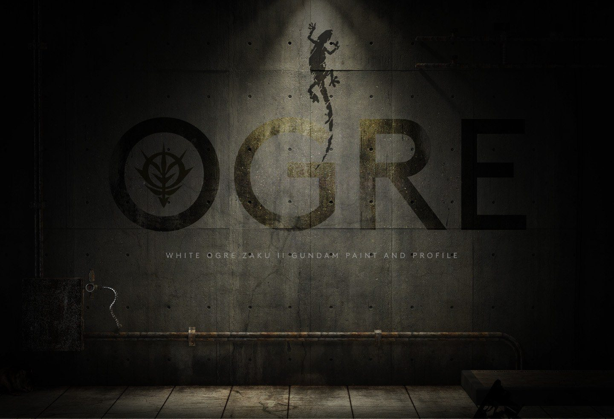
Title card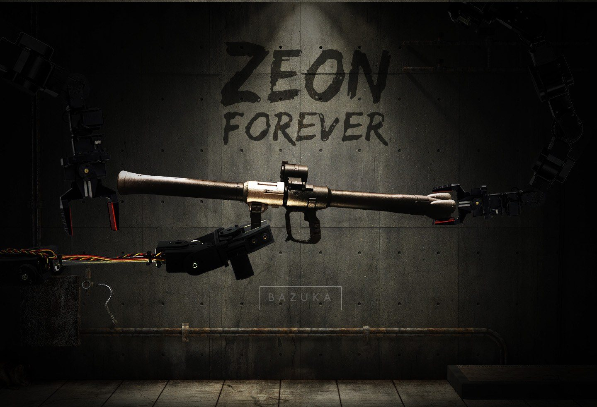
Zeon forever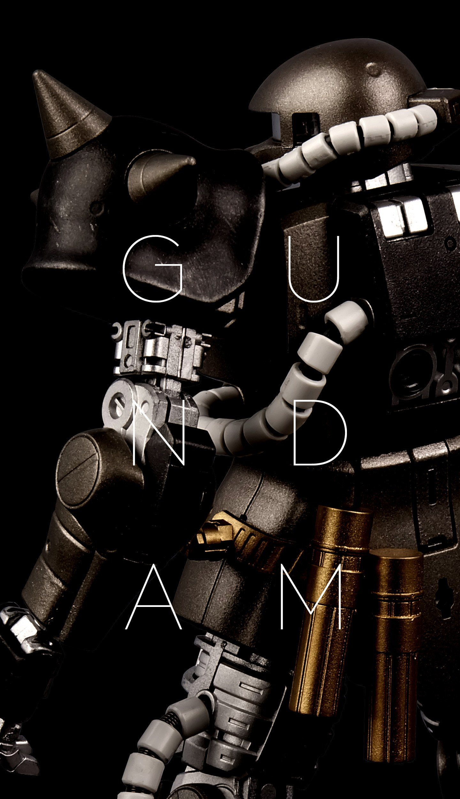
Detail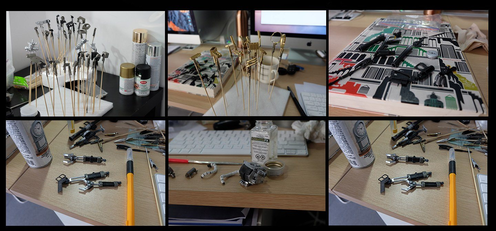
Process of painting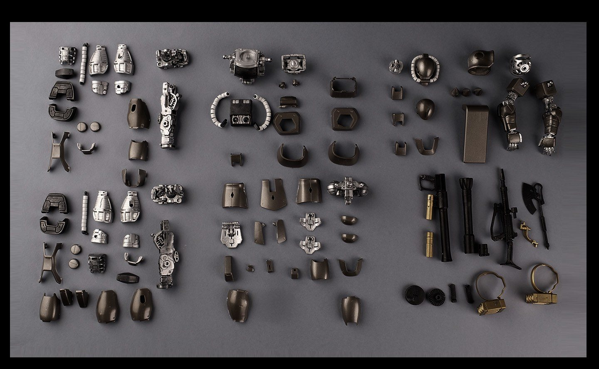
Painted parts07 Photography
Looking, between projects.
Street corners, subway signs, cats and quiet light. Shot on the go, kept on Instagram.
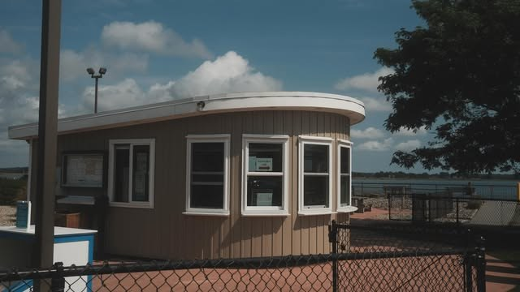
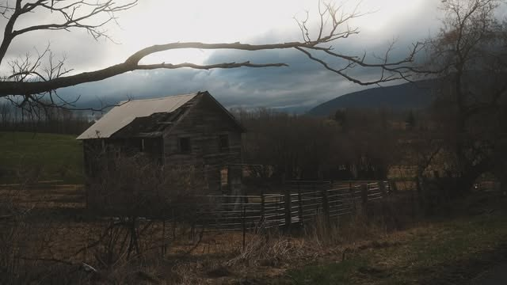
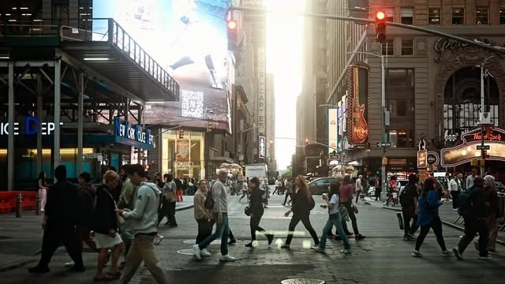
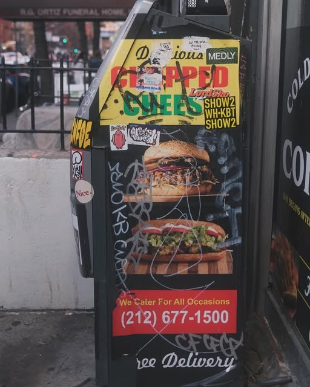
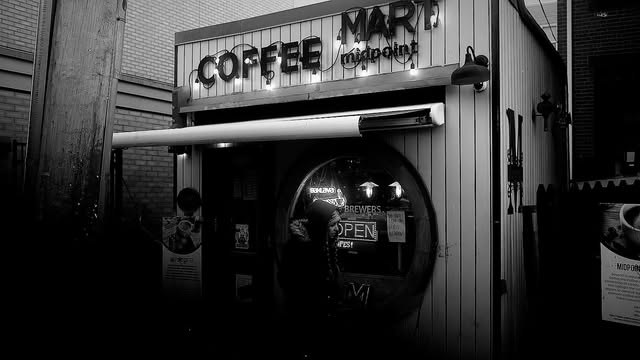
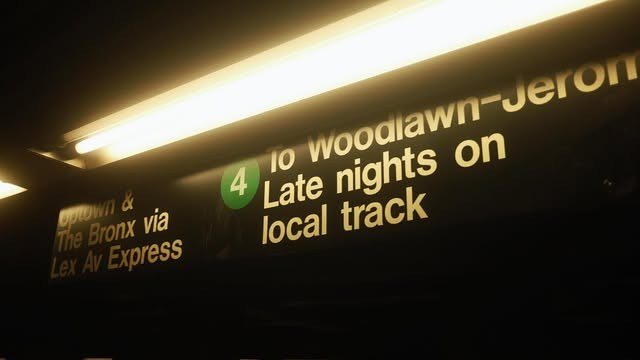
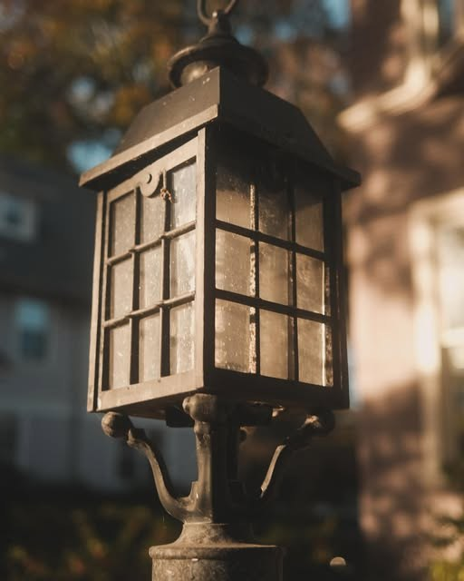
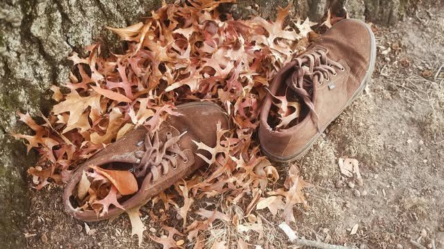
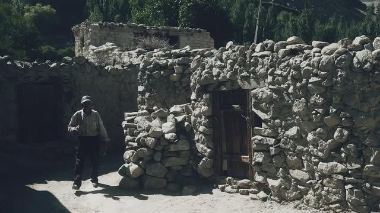